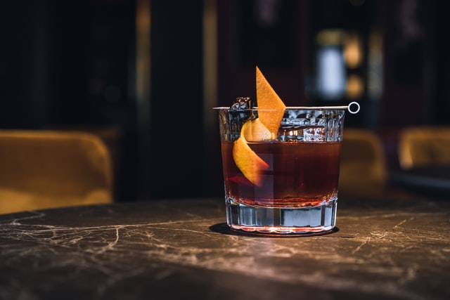

Home
Old Fashioned

Ingredients
- 2 ounces bourbon or rye whiskey
- 1/4 ounce simple syrup
- 2 dashes Angostura bitters
- Orange peel or Luxardo cherry, for garnish (optional)
Method
- Make the drink:
Add simple syrup and bitters to a rocks glass. Fill the glass with ice, and stir to combine. (My favorite stirrer for a single cocktail? This cake tester!) Add bourbon or rye and stir for about 30 seconds to chill and dilute. Garnish with orange peel or Luxardo cherry, if desired.